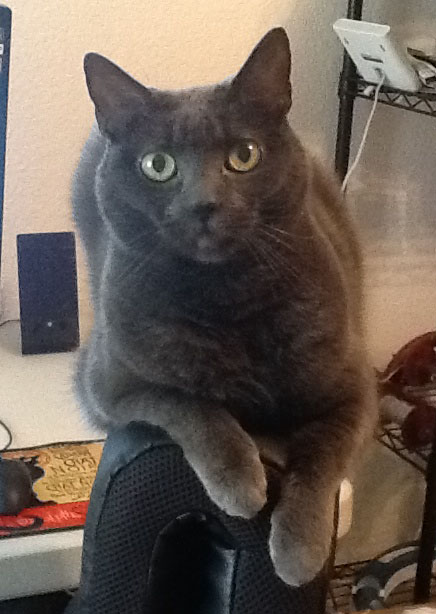
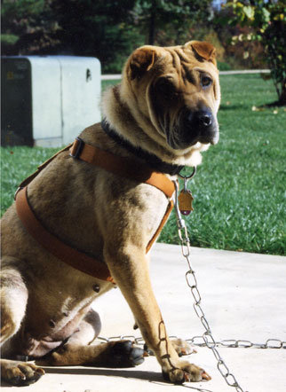
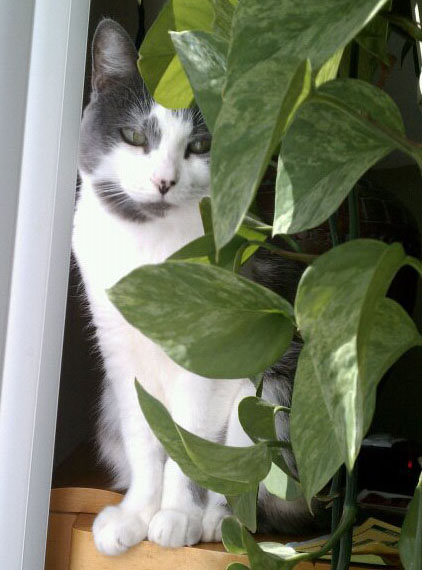
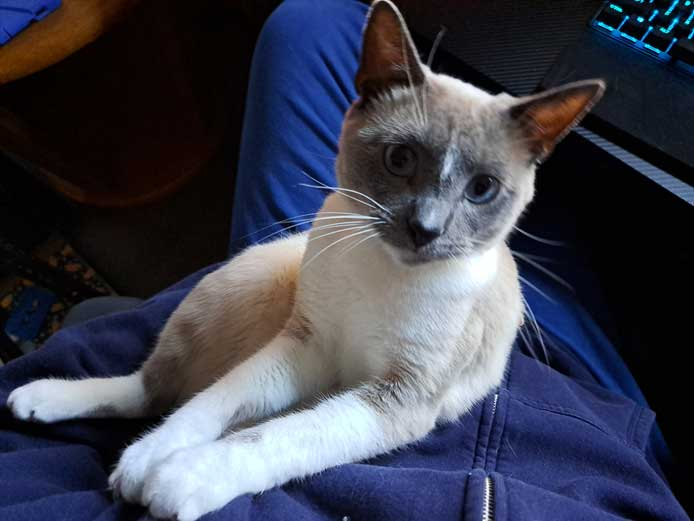
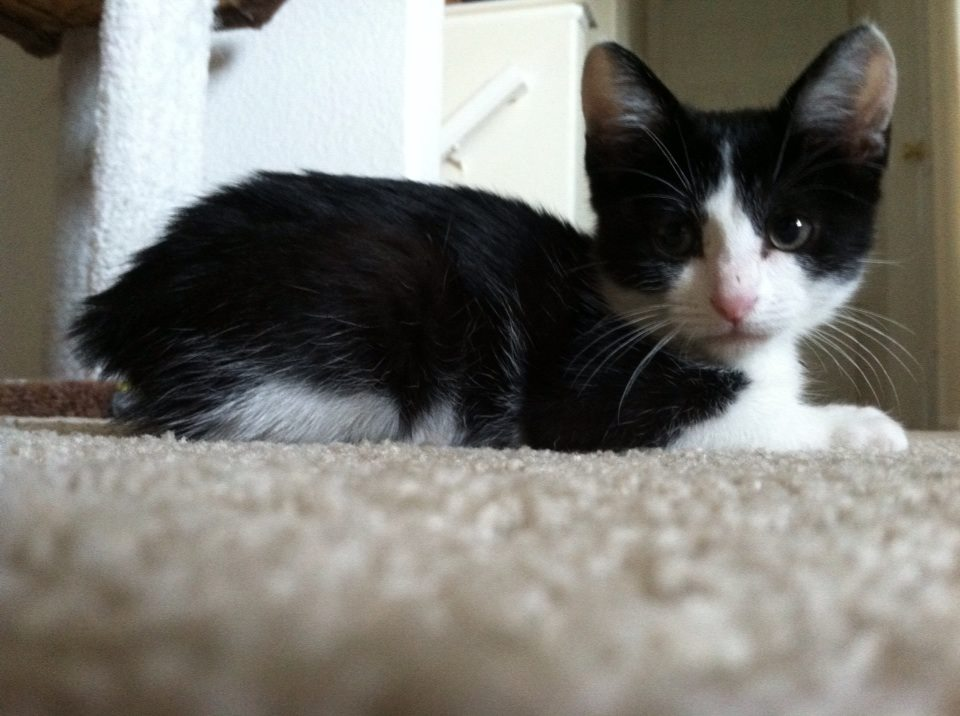
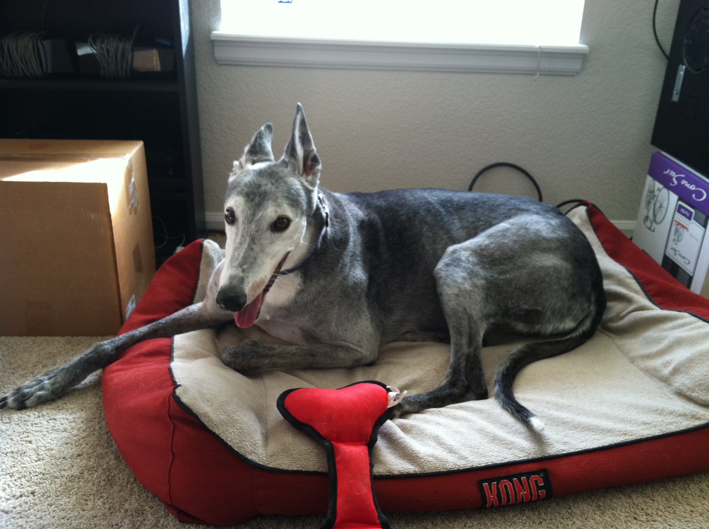
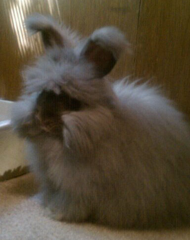
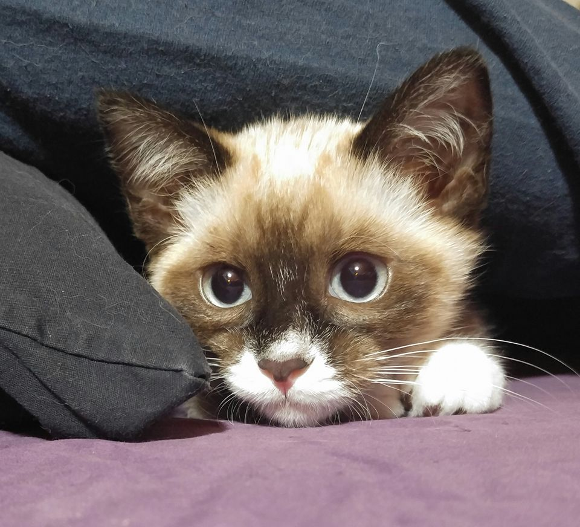

Ana is an 8 year old cat who is very vocal and lets you know in no uncertain terms what she wants. She will be happiest as your only animal as she wants your full attention.

Su is a 2 year old shar pei who hates water in any form and loves other animals. She prefers to relax with her humans and doesn't really like the great outdoors.

Kami is a 4 year old cat who gets along well with other animals, gives lots of slow blinks and needs a more quiet household in order to truly be comfortable.

Nikita is an 8 month old kitten who is high energy and needs lots of attention. She loves to play and parkour off walls when she sees her people. She needs a house that has the time and energy to keep up with her.

Jack is a 4 month old kitten who would do well in just about any household. He is bright playful and gets along with everyone. He is low maintenance and will be a treasured companion.

Kyle is an 8 year old distinguished gentleman greyhound who at this point in his life prefers a good nap to anything else. He is gentle and loving and gets along well with cats and other dogs.

Daisy is a 4 month old angora bunny who needs a quiet home to be happy. She loves other bunnies but needs to be in charge. She is sweet, loving and full of energy.

Lily is a beautiful 5 month old kitten who has a lot of energy and loves to play. She is very dedicated to her chosen human and will follow them throughout the house like a puppy. She would do well in most homes.